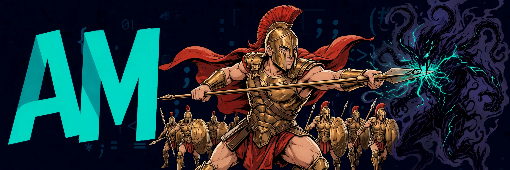
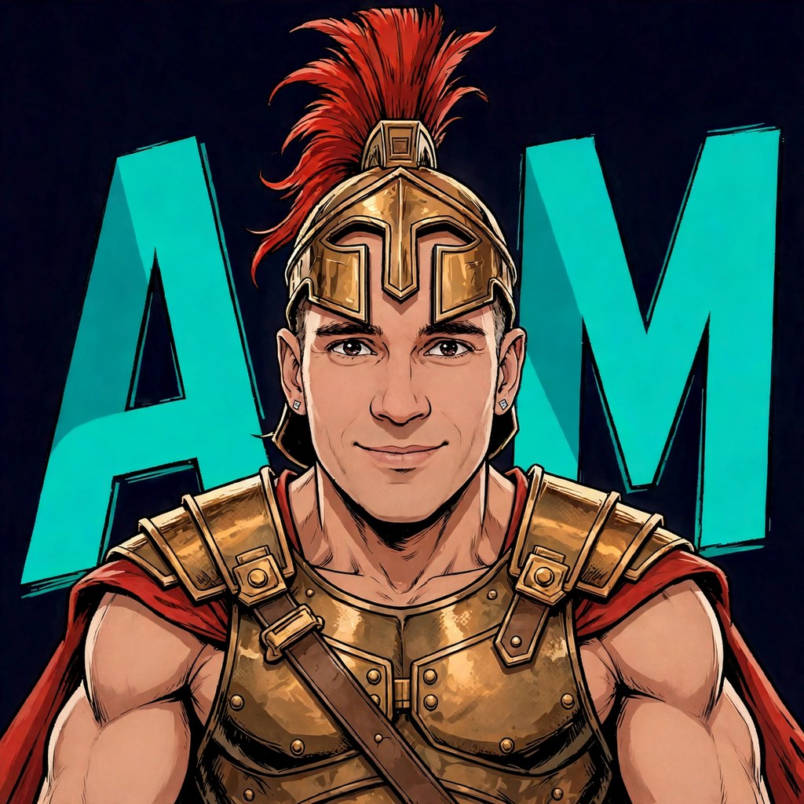

Meridiano-cero
Juego público de investigación internacional. Motor determinista, generador de casos y partidas jugables en casa con tu propio LLM local. En español, inglés y francés.
TypeScript · Ollama / LM Studio


Desarrollador web · Granada, España
Me gusta construir aplicaciones que se usan de verdad: del backend a la interfaz, y últimamente con IA corriendo en local, donde yo controlo los datos. Aprendo construyendo.
Lo que estoy construyendo ahora.
Juego público de investigación internacional. Motor determinista, generador de casos y partidas jugables en casa con tu propio LLM local. En español, inglés y francés.
TypeScript · Ollama / LM Studio
App de interacción con la audiencia en español, estilo Mentimeter + Kahoot: presentaciones en vivo, preguntas, concursos con rachas y podio.
PHP · Laravel 13 · React · TypeScript · Inertia · MySQL · Redis
App para Windows que convierte ideas en mapas mentales y presentaciones editables, con IA local (Ollama / LM Studio) o remota.
TypeScript
Backend de lista de la compra colaborativa, para aprender Clean Architecture / Hexagonal con Outbox.
TypeScript
Agente de IA personal y local por Telegram, con Ollama, Groq y OpenRouter. Skills dinámicas, gestión del VPS por SSH, GitHub y memoria RAG.
Python · Ollama · Groq · OpenRouter · Telegram
Teleprompter para Android con control desde un reloj Wear OS: guiones organizados por secciones, lectura sin conexión y manos libres para ponencias y charlas. Prototipo funcional v0.1.0.
Kotlin · Android · Wear OS
Día a día: PHP · Laravel · HTML · CSS · ASP.NET Web Forms · C# · SQL Server. Aprendiendo a fondo: TypeScript · IA local.
Lo mejor para hablar de código es abrir un issue en alguno de mis repos públicos, o encontrarme en LinkedIn y en GitHub.